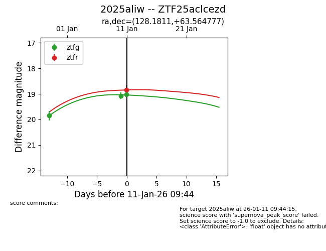
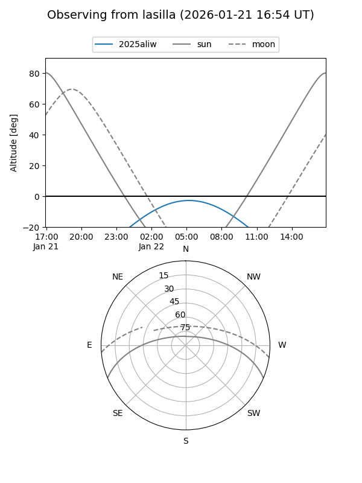
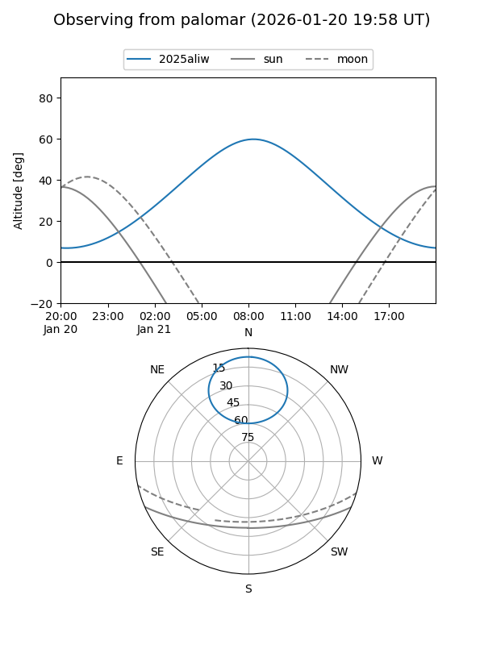
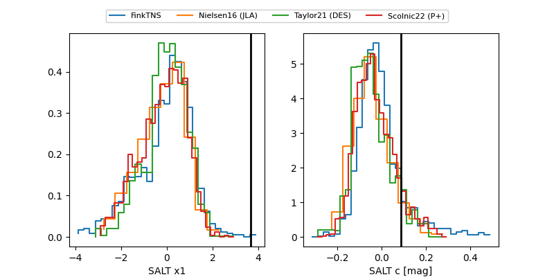

2025aliw
Target 2025aliw at 2026-01-11 08:39
Aliases and brokers:
FINK: link
Lasair: link
ALeRCE: link
TNS: link
YSE: link
alt names
ZTF25aclcezd (ztf,fink_ztf)
2025aliw (tns,yse)
Coordinates:
equatorial (ra, dec) = 128.1811,+63.56478
equatorial (HMS+DMS) = 08:32:43.46,+63:33:53.20
galactic (l, b) = (152.4718,+35.29343)
Flags:
Photometry:
last ztfg=19.07, ztfr=18.85
2 ztfg, 1 ztfr detections
Lightcurve

Visibility


Additional plots
